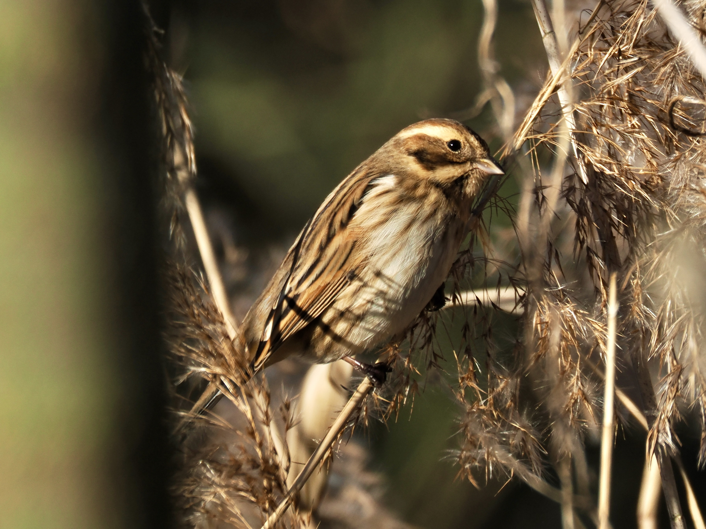
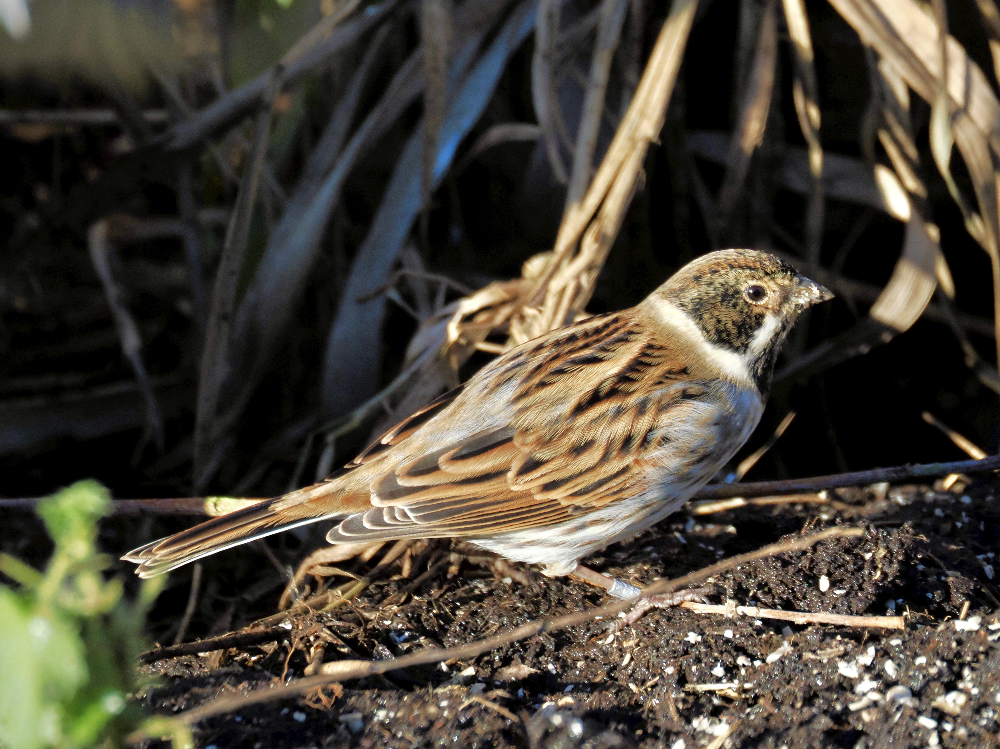
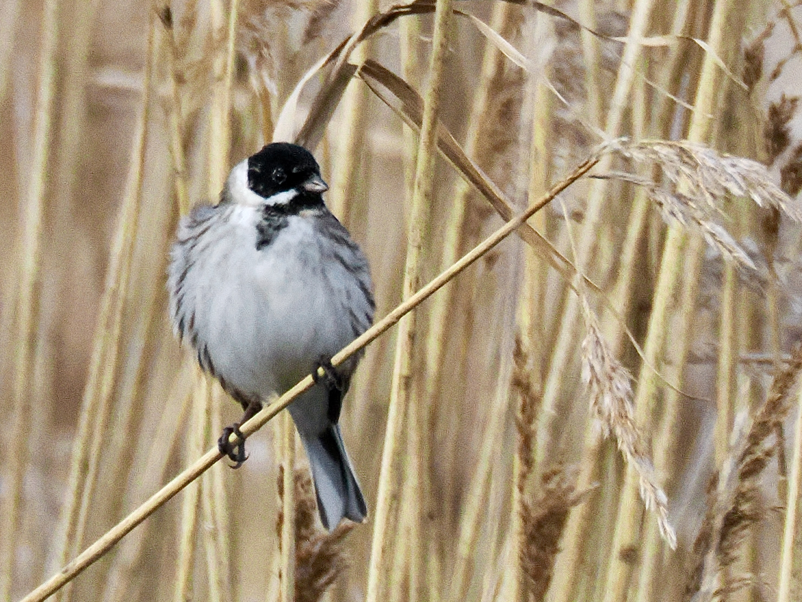

Reed Bunting
Emberiza schoeniclus
Order: Passeriformes
Family: Emberizidae

A sparrow-like brown bunting. Female has a brown head with a pale supercilium. Found in marshy areas and reedbeds, sometimes open farmland.

Non-breeding male has a black-and-brown head with a white collar and moustachial stripe.

In breeding plumage, the male's head becomes solid black. Perches on bushes to sing.